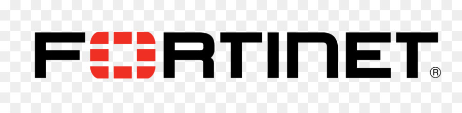
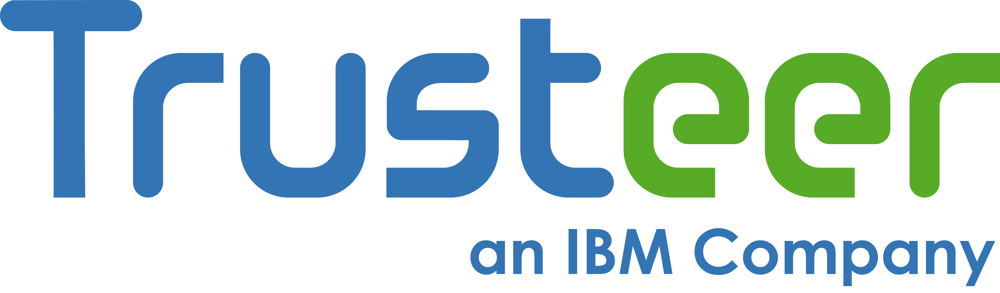
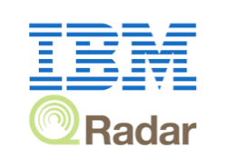

SECURITY & IT GRC
Work is easy when you have all tools around you!The demand for business to identify and mitigate risks that can affect their ability to continue their operations during an unforeseen event is a priority for business. We provide market-leading IT Security and GRC Software Solutions that deliver the Intelligence you need to secure your business against next-generation threats and advanced cyberattacks, safeguard against data breach, drive your business performance, operate more efficiently, promote effective information sharing, more effective reporting activities and avoid wasteful overlaps.
We also help organizations to:
- Assess the maturity and effectiveness of their security program
- Improve operational security for critical infrastructure
- Manage and govern information security solutions and services
- Manage processes aimed at meeting security and regulatory compliance requirements
- Build a more risk aware culture through education and awareness
Some of our security
Data Security and Protection
Moreover the types and amount of information organizations now collect and store is skyrocketing and often it is unknown where critical information resides, who can access it, when they can access it or what happens once it’s accessed. Our data Security providers offers a comprehensive data security platform that provides a full range of capabilities that can help organizations to:
- Prevent data breaches, insider risk and fraud, and unauthorized changes to (or destruction of) sensitive data
- 100% visibility into all database transactions – across all platforms and protocols – including those of DBAs, developers and outsourced personnel.
- Centralized aggregation and normalization of audit data from across your database infrastructure for enterprise-wide compliance auditing and reporting, correlation, and forensics.
- A secure, tamper-proof audit trail that supports the separation of duties (SOD) required by auditors



Identity and Access Management
Many organizations face access management chaos. They have multiple sets of users – employees, contractors, Business Partners and consumers – trying to access critical IT resources through multiple devices, including smartphones, tablets and notebooks.
Our Security identity and access management solutions help protect and monitor user access in multi-perimeter environments with context-based access control, security policy enforcement and business-driven identity governance.
Cybercrime and Advanced Web Fraud Protection
Pufferfish Technologies is a service provider for industry leading web fraud solution, Quantum Data Engines(Compass) percived fraud, IBM® Security Trusteer® e.t.c products that help detect and prevent the full range of attack vectors responsible for the majority of online, mobile and cross-channel fraud.

Brand Abuse and Email Security
Email continues to be the primary way cyber criminals infiltrate an enterprise. 90% of cyberattacks and data breaches involve spear phishing. 100% of spear phishing attacks involve identity deception. Existing solutions are failing to protect organizations from targeted email attacks, spear phishing and business email compromise.
PhishFort is our flagship anti-phishing solution whose approach involves detecting, analysing and proactively dismantling the systems (phishing sites) and illicit services cybercriminals depend upon to carry out phishing attacks.

End Point Management
Each device that connects to the your network must be adequately secured to prevent breaches and the loss of sensitive data.
With the continuous adoption of mobile devices into work environments, the task of securing various both employee and organization owned endpoints can be daunting for any size business to say the least. You will need the smartest endpoint protection platform on the planet to increase operational efficiency, maximize data security and deliver on your digital transformation goals. Fortinet, Checkpoint etc. delivers cognitive insights, contextual analytics, and cloud-sourced benchmarking capabilities to make sense of the mobile minutiae you encounter daily – while protecting your endpoints, users, apps, docs, and their data from one platform.
Security Information and Event Management (SIEM)
With the increasing number of Advanced Persistent Threats (APTs) and sensitive data leaks, adopting a Security Information Event Management (SIEM) solution is no longer just a compliance measure but a vital step to detect security deviations and react promptly to suspicious activities.

Data Encryption
In order to guard against advanced threats in a complex and evolving climate of virtualization, cloud services, and mobility, while maintaining regulatory compliance, organizations must increasingly take a data-centric approach to safeguarding their sensitive information.

Firewall Policy Management
Tufin SecureTrack is the only firewall management solution that delivers security, compliance and connectivity across physical networks and hybrid cloud by managing the growing complexity and fragmentation of Enterprise IT.
It provide you below capabilities,
- Managing enterprise network security
- Establish and troubleshoot business connectivity
- Firewall policy management
- Real-time compliance and audit readiness
- Establishing a central, unified security policy baseline
- Visibility and control across hybrid IT
NETWORK ACCESS CONTROL
Network Access Control (NAC) is a type of Cyber Security technology that allows an organization to define and implement policies that control the access of endpoints to a network; while at the same time providing visibility of each device trying to access. NAC provides security posture assessments for the endpoints, highlighting the risks, and can control access based on the level of risk tolerated by the organization.